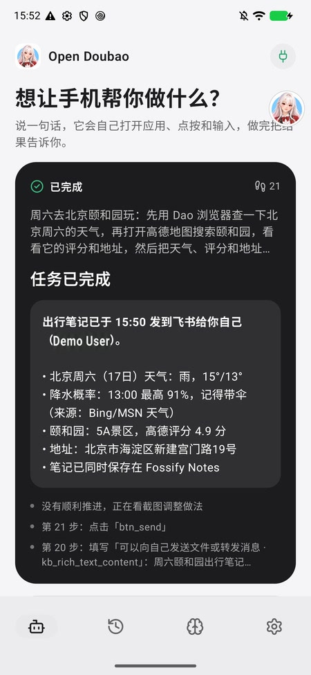

口袋里的执行者
说出目标，让助手操作手机。记住你的偏好，完成日常任务。
了解手机助手开源的手机 AI 助手
查信息、切应用、整理笔记。
把目标告诉豆馅，让它自己操作手机，
把结果带回给你。
Android 11+ · 模型自由配置 · MIT 开源

01在手机里，独立完成无需电脑、ADB 或 root
02跨过应用之间的边界让多个操作，成为一个任务
03你的模型，你来选择自行配置服务与 API Key
SEE IT IN ACTION / 真实演示
从一个周末出行计划开始，
看看它怎么把事情连起来。
“周六去颐和园玩，
查天气、看评分，
记好行程，发给我自己。”
1 句话
4 个应用
21 步操作
A LITTLE MORE FREEDOM / 豆馅 OS
查天气、读内容、找信息。纯查询任务可以交给虚拟屏，手机前台继续留给你。
把查询交给助手。
前台照常使用，小窗查看进度。
完成后，在小窗收下结果。
豆馅 OS 专属 · 当前适配 Pixel 6 Pro
探索豆馅 OSBUILT TO ACT / 技术思路
界面元素优先，
按需接入 Jev 与视觉模型。
识别页面内容，
找到可操作的元素。
Jev 从候选动作中选择，
不确定时交给视觉模型。
确认当前页面，
检查操作范围。
点击、输入、滚动，
重新观察后继续。
支持 Android 11+，无需 root 或电脑。配置模型、开启无障碍服务即可开始。
记录在本机加密保存。任务所需的页面内容、记忆和截图会发送到你选择的模型服务。
可以排除应用、随时停止任务。密码与系统授权由你处理，付款、删除等敏感操作仍需你核对。